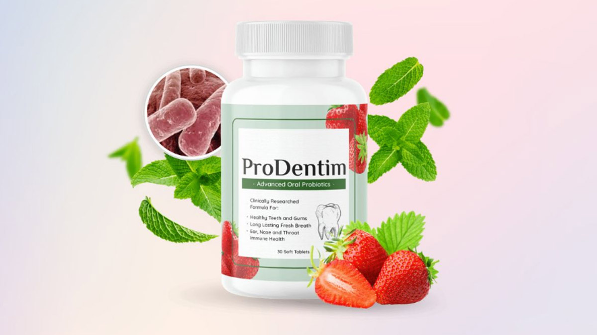
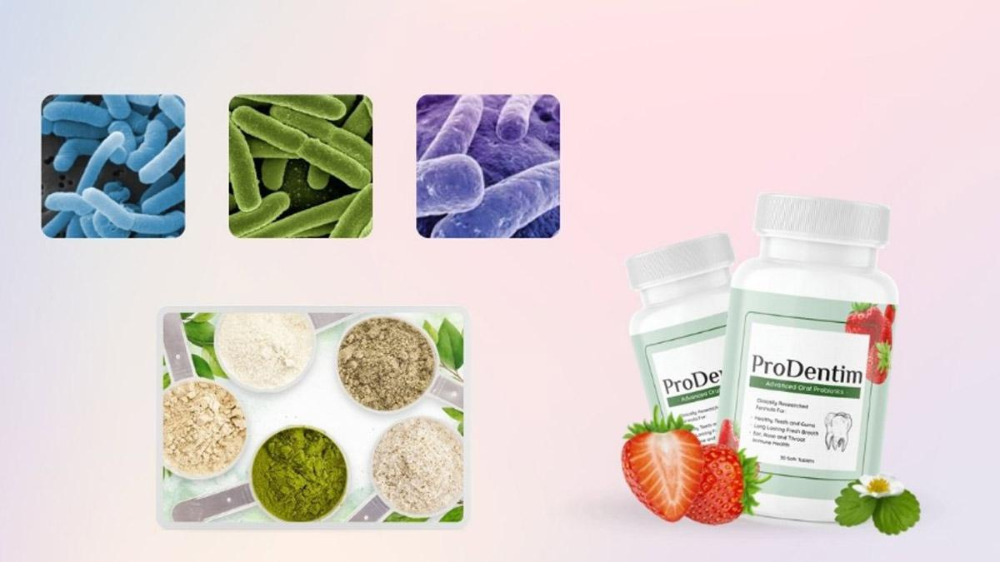
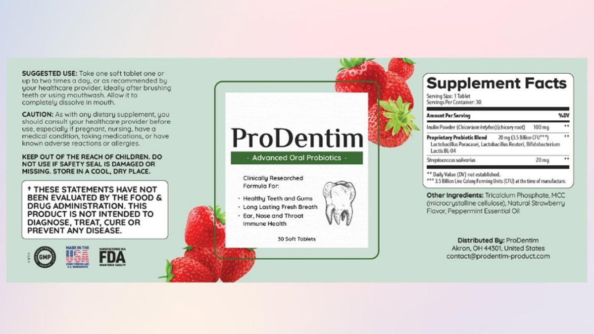
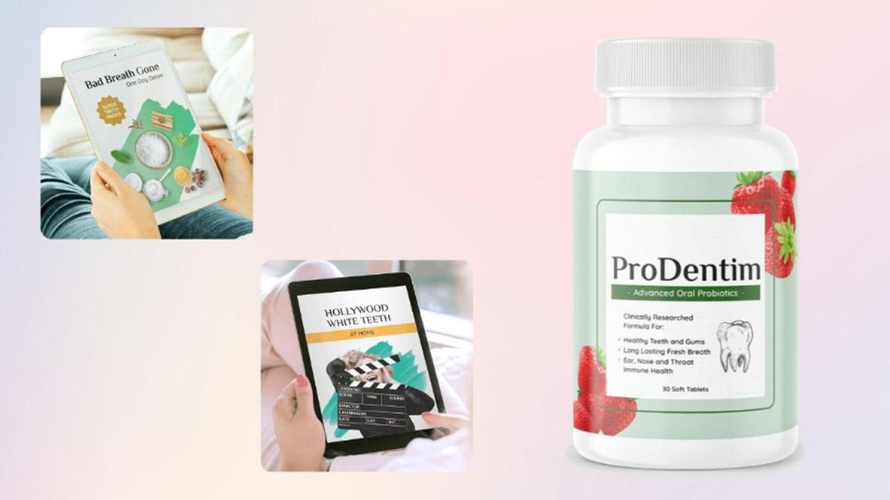

[PRODENTIM] 💊 NEW ALERT 💊 Prodentim Supplement Reviews - ProDentim Customer Reviews - Prodentin

The ProDentim oral health formula is said to be made using a unique blend of probiotics and ingredients that have the ability to repopulate the mouth with good bacteria.
If you are someone who is planning to purchase the supplement, make sure that you go through the ProDentim review till the end.
ProDentim Reviews: Can This Dental Supplement Protect Your Teeth and Gums?
Going through the ProDentim official website, the available details suggest that the supplement is the result of some of the recent studies and research that has taken place in the field. It is made using ingredients that are beneficial to the body in different ways.
These ingredients are also ensured to be 100% natural in origin and there is not even a single mention of any kind of other substances used in the supplement that can be harmful to the body.
Click To Visit The Official Website Of ProDentim
Even though this is the case, having an understanding of the different details of the ProDentim supplement is very important as oral health has such a massive role to play in the overall wellness of a person.
In order to do that, we will be analyzing the different aspects like the ingredients used in its making, the different benefits, and even its pros and cons in this ProDentim review.
Other major aspects like the details of price and customer reviews are also included for additional reference.
- Supplement Name: ProDentim
- Category: Dental health formula
- Form: Soft tablets
- Total Count: 30
- Dosage: 1 tablet daily
- Ingredients: Lactobacillus Paracasei, B.lactis BL-04, Lactobacillus Reuteri, Inulin, Malic acid, Tricalcium Phosphate, Peppermint
- Benefits: Ensures the health of the mouth microbiome, Reduces gum inflammation, Eliminates bad breath, Supports a healthy mouth environment, Overall dental care support
- Side Effects: Zero
- Consumer Reports: Positive
- Price: $69 for 1 bottle
- Bonuses: #1 Bad Breath Gone. One Day Detox, #2 Hollywood White Teeth at Home
- Refund: For 60 days
- Availability: Only on the ProDentim official website
- Website: Click Here
What Is ProDentim?
As mentioned, ProDentim is one of the most talked about oral supplements that is available in the market now. The use of the formula is said to protect the microbiome population in the oral cavity which can be reduced by the use of different chemicals or other substances that we use to keep our mouth clean.
While oral cleanliness is important, what we should not forget is the fact that the mouth also has a huge population of bacteria that are beneficial to the body.
With the combination of some of the best ingredients along with 3.5 billion probiotics and nutrients, the ProDentim oral care formula helps restore and ensure the health of your mouth.
The different ingredients used in the making are known to be effective in their respective functions and these functions and not make claims backed by information from reputed scientific sources.
Along with this, the makers of the supplement take special care to avoid any chemical ingredient that can be harmful to the body or your oral cavity. ProDentim dental health aid comes in the form of soft tablets that you can chew, making the consumption easy and there are 30 tablets each in every standard bottle.
Check If ProDentim Is Currently Available On The Official Website!
How Does The ProDentim Oral Health Supplement Work?
For years, we were taught that the issues associated with poor health were the result of bad bacteria, and in order to keep these bad bacteria away, we use different kinds of agents like toothpaste and mouthwash.
But recent studies have shown that the imbalance in the number of bacteria is due to the significantly reduced number of good bacteria in the mouth and the fact the use of different agents to keep the mouth clean has a part in this due to the different toxic ingredients present in it adds on top.
ProDentim oral health tablet is a well-sought combination of ingredients that are known to have an effect on the overall health and wellness of the oral microbiome.
Along with taking care of the oral health of the body, the ProDentim soft capsules also have a positive action on other organs and protect from other issues as well.
ProDentim Ingredients: What Goes Into The Making?
Having a proper understanding of the different ingredients used in the making is very important. This will help you to get an idea regarding the benefits of using the ProDentim supplement and also about the chances of having any kind of side effects from it.
The ProDentim ingredients are 100% natural in origin and there is also no trace of any kind of chemical or artificial ingredients in the making of the supplement. The list of ingredients are;

- Lactobacillus Paracasei: This bacteria is known for its effect on supporting the health of your gums and it also helps your sinuses to stay free and open too.
- B.lactis BL-04: The ingredient is used in the ProDentim supplement to support the balance of mouth bacteria and also to support a healthy immune system in the body. Along with these effects, it also helps to support the respiratory tract.
- Lactobacillus Reuteri: The major function of the ingredient in the body is to support a healthy mouth environment and it also helps with inflammation too.
Along with these ProDentim ingredients, a proprietary blend of 4 plants and minerals is also used in the making of ProDentim. The ingredients used in this mix are;
- Inulin - Supports the good bacteria found in the oral cavity
- Malic acid (from strawberries) - Helps to maintain the whiteness of the teeth
- Tricalcium Phosphate - Supports the health of the teeth
- Peppermint - Known for its natural anti-inflammatory property
Get Detailed Ingredient Information: Visit the Official ProDentim Website
How To Use ProDentim Soft Tablets?
There are a few different instructions and steps that you need to follow while taking the ProDentim probiotic formula so that you get the best result from the supplement.
The official website shows that it comes in the form of chewable tablets and that there are around 30 ProDentim tablets in each standard bottle.

The instructions by the makers suggest that you should take one tablet each every day if you want to get the right ProDentim result quickly. Also, keep in mind that the best time to take the capsules is in the morning.
Another thing that you should be mindful of is to consult your doctor before taking the ProDentim soft pills if you are someone who has any kind of medical history or is currently taking any kind of prescription medicine.
Check The Official Website To See If ProDentim Is Currently In Stock
Health Benefits Associated With ProDentim Formula
Even though the major concern of the ProDentim dental care formula is to take care of your oral health, there are a few other benefits associated with it. Here are some of the different ProDentim benefits:
Ensures the health of the microbiome of the mouth
This is the major benefit of the ProDentim candy. The different ingredients used in the making of the supplement are known for their cartoon on ensuring the health of the good bacteria and microbiome of the oral cavity.
Helps to get better sleep
Along with taking care of the health of your gums and mouth, the ProDentim ingredients are also effective in helping you to get proper rest. It takes care of the proper sleep cycle and ensures that you sleep soundly throughout the night.
Supports the health and proper functioning of the lungs
The ProDentim probiotic candy and the ingredients used in it have a massive effect on ensuring the health and proper functioning of the lungs.
Check The Official Website To See If ProDentim Is Currently In Stock
Pros And Cons Of ProDentim
Just like the other dietary supplements that are available in the market now, the ProDentim chewable capsule also has a few pros and cons associated with it and it is only natural that a formula has these.
Here are some of the different pros and cons of the ProDentim oral health tablets, so that you get a better and easier understanding.
Pros
- Made using natural ingredients only
- ProDentim probiotic pill is pretty easy to use
- No risk of habit formation
- No traces of any stimulants
Cons
- It can only be purchased from the ProDentim official website.
- The formula often goes out of stock owing to the great demand
ProDentim Side Effects And Safety Concerns
Side effects are a real issue when it comes to dietary supplements and most of the ones available in the market are prone to this risk. As these effects have a huge negative impact on the body, it is always better to look out for them before choosing the formulas.
In the case of the ProDentim teeth health support formula, all the details of the ingredients are available on the official website and all these ingredients are 100% natural in origin. Also, there is no involvement of any kind of chemical or artificial ingredients in it.
Due to this very reason, there is no chance of having any kind of ProDentim side effects. Also, make sure that you consult your doctor before taking the supplement if you are currently taking any other prescription medicine or have some kind of medical history.
Check The Official Website To See If ProDentim Is Currently In Stock
When Can Results Be Expected From ProDentim?
The time taken for a dietary formula to show results is very important. After all, no one wants to end up with a supplement that takes a very long time to show the result.
One thing that you should keep in mind is the fact that the time taken for the supplement to show results depends hugely on the health of the person taking it.
So, chances are high that the time taken to show ProDentim results can be different for everyone, depending on their health.
But on average, you should use the ProDentim teeth and gum health aid for a minimum period of 3 - 6 months in order to get the full benefits.
This is the time required for the different ingredients to optimize and act on the different functions and organs of the body.
So, if you get results a bit slower than other people, make sure that you still follow the routine of taking the ProDentim soft tablets.
ProDentim Delivers Incredible Results! Find Out The Truth: Click Here To Read More
Are The ProDentim Customer Reports Positive?
A lot of different ProDentim customer reviews are available on the internet as it is quite popular and these reviews are so important if you want to understand the supplement. These reviews are made of the different opinions of customers who have actually used the formula.
Going through these ProDentim reviews, the majority of the customers state that they are satisfied with the results that they got.
The reviews also show that the supplement lives up to all the different claims that it makes in terms of effectiveness, rather than leaving it all mere claims.
ProDentim Cost And Availability
If you are looking for the best place to buy ProDentim pills, then it is best to choose the official website. This is because you will not be able to find the supplement from any sources other than the official ProDentim website to purchase it from.
The ProDentim price details are as follows;
- 1 bottle - 30 days supply - $69/bottle + free shipping
- 3 bottles - 90 days supply - $59/bottle + free shipping + 2 free ebooks
- 6 bottles - 180 days supply - $49/bottle + free shipping + 2 free ebooks
Click Here To Make A Purchase From ProDentim Official Website
ProDentim Bonuses
Along with the purchase of a set of 3 or 6 bottles, you will be provided with 2 different ebooks which will help you to enhance the effects of the supplement. The details of the ProDentim bonuses are as follows;

#1 Bad Breath Gone. One Day Detox
Bad breath is something that disturbs many people and this e-book will help you to effectively eliminate the issue of bad breath through different methods within just 7 days. It can be done using different herbs and spices that are available in your kitchen.
#2 Hollywood White Teeth at Home
Celebrities always have pearl white teeth and if you are someone who has that then this ebook and the details included will help you to have white teeth.
Refund Policy Of ProDentim
The makers of the ProDentim oral probiotic formula state that all the purchases made from the official website are covered by a 60-day money-back guarantee.
According to the terms of this policy, you can retain the supplement within 60 days of the original purchase if you are not getting the right result and receive a full refund on the amount you spent, no questions asked.
Click Here To Make A Purchase From ProDentim Official Website
Wrapping Up: ProDentim Reviews
ProDentim is one of the most popular oral hygiene support supplements that is currently ruling the market. The action of the formula is said to be highly effective in ensuring the health of your gums and teeth and even the different other organs of the body like lungs.
ProDentim oral care pill is made using ingredients that are known for their effects and are also backed by different reputed scientific organizations and communities.
The ProDentim review has also included the price details and the information gathered from different customer reviews.
After going through these different details, it is safe to say that ProDentim chewable tablets are dependable and highly worthy of change. So if you are looking for an effective oral health support supplement, ProDentim is a name that you can keep in mind.
Ready to Purchase? Click Here to Buy from the Official ProDentim Website
Frequently Asked Questions
What is the best way to ensure the authenticity of the ProDentim formula I purchase from the internet?
If you want to be 100% sure about the quality and authenticity of the supplement, then make sure that you purchase it from the ProDentim official website and not from any other sources.
What if the ProDentim dental health capsules are not giving me the best results?
If you are not getting the right result from this supplement, you are free to return it and receive a full refund on the amount, but just make sure that the return is filed within 60 days of the original purchase.
Do the ProDentim bonuses require any kind of additional payment?
The bonuses provided along with the ProDentim purchase are completely free of any charges. They do not require any kind of additional payment.
Is making the payment through the ProDentim official website safe?
There are no safety concerns as all the information shared at the time of purchase is protected using modern technology.
Is the ProDentim oral wellness capsules available for purchase from my local retail store?
ProDentim is available for purchase only from the official website of the supplement and not from any other sources.
Click To Order ProDentim With A 60-day Money-back Guarantee From Its Official Website